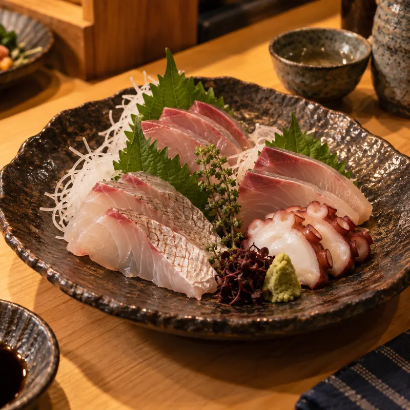
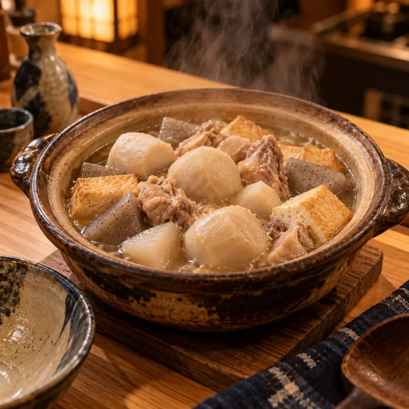
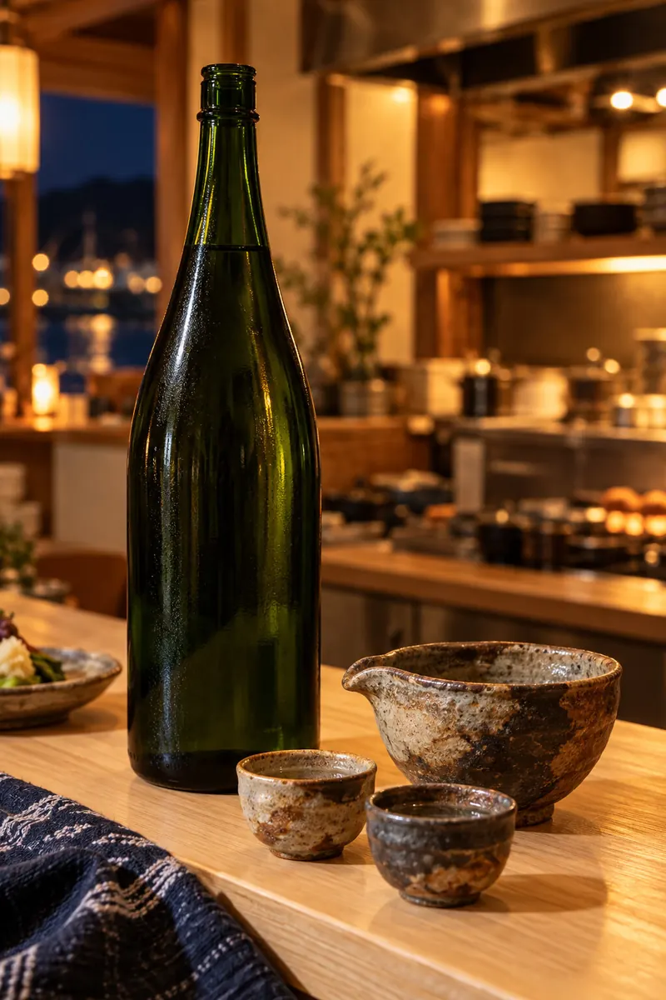
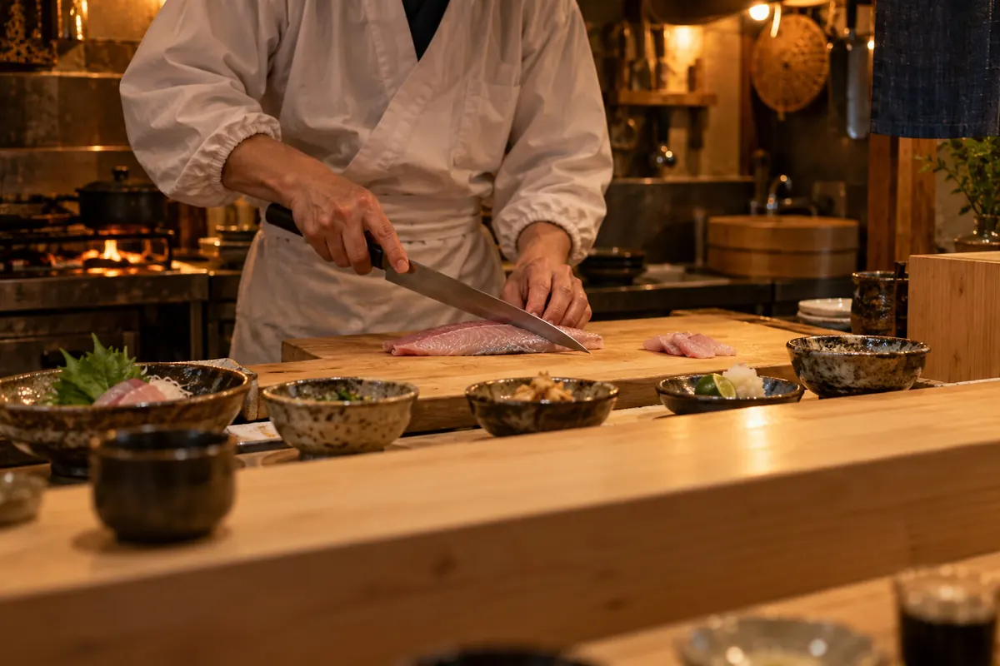
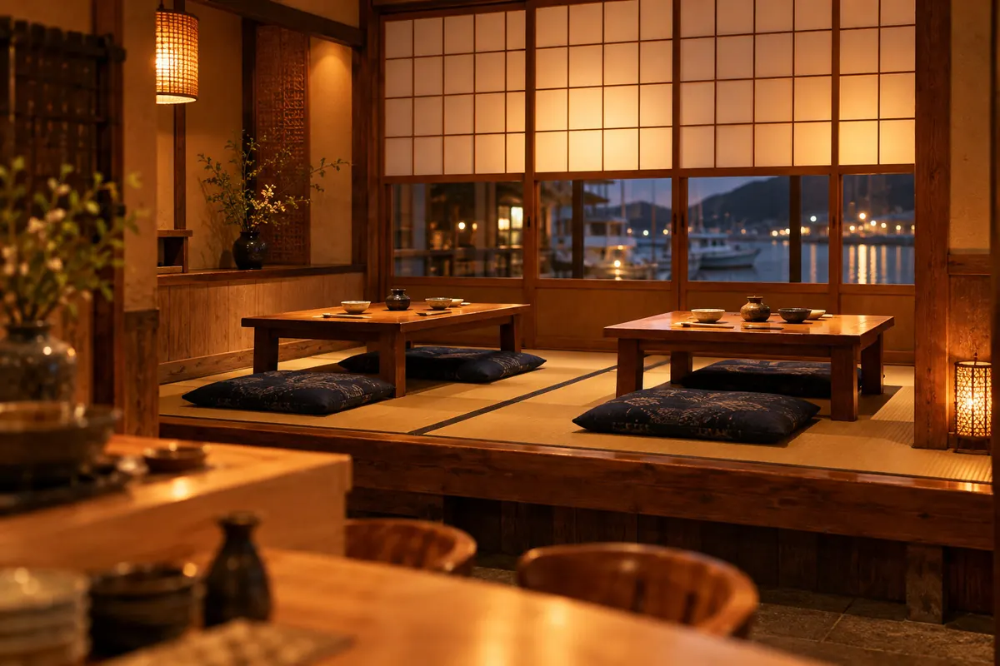

其の一
燧灘の地魚
大将が毎朝市場へ足を運び、その日いちばんの魚を自分の目で選んでいます。鯛、太刀魚、ほご。瀬戸内の穏やかな海で育った魚は、身がしまって甘みがあります。お造りにするか、煮付けにするか。魚を見てから決めるので、黒板のおすすめは毎日変わります。
新居浜の路地で十五年。
地の魚と地の酒で、おかえりなさい。
営業17:30〜23:00 定休日曜
ご予約・お問い合わせ今年も里芋のおいしい季節になりました。鶏と油揚げ、こんにゃくを合わせ、ひと晩寝かせた出汁でことこと炊いています。小さな土鍋でお出しします。
太鼓祭りの期間中は、17:00開店・24:00閉店（料理L.O. 23:00）で営業します。寄り合いや慰労会のご予約はお早めにどうぞ。祭りのあとの一杯、お待ちしています。
座敷は最大16名様、貸切は24名様までご利用いただけます。コースに飲み放題（2時間）もお付けできます。人数やご予算はお気軽にご相談ください。
Kodawari
燧灘の魚と、東予の季節の味。気取らず、でも手間は惜しまずに。

大将が毎朝市場へ足を運び、その日いちばんの魚を自分の目で選んでいます。鯛、太刀魚、ほご。瀬戸内の穏やかな海で育った魚は、身がしまって甘みがあります。お造りにするか、煮付けにするか。魚を見てから決めるので、黒板のおすすめは毎日変わります。

夏は西条の絹かわなす、秋はいもたき。今治生まれのせんざんきや、鉄板で押し焼きにする焼き鳥も。子どもの頃から食べてきた地元の味を、居酒屋の一品として丁寧に仕立てています。季節が変わると、お品書きも少しずつ入れ替わります。

〆のごはんは、西条のうちぬきの水で炊いています。お酒は唎酒師の女将が選ぶ東予の地酒を中心に、季節ごとに入れ替え。お料理に合わせた一杯をおすすめします。お車の方には、ノンアルコールもしっかりご用意しています。
Today's
その日の仕入れで、大将が黒板に書いています。
その日の仕入れで、大将が黒板に書いています。
本日のおすすめ
秋のある日
大将より：今日の太刀魚は立派です。塩だけで焼くのがいちばん！
※内容は日によって変わります。売り切れの際はご容赦ください。
Course
2名様から承ります。前日までにご予約ください。
2名様から承ります。前日までにご予約ください。
3,800円（税込）
5,500円（税込）
生ビール・東予の地酒・サワー・ノンアルコールなど。コースにお付けできます。
こんな集まりに
人数やご予算、苦手な食材などはお気軽にご相談ください。
Seats
おひとりでも、ご家族でも。全席禁煙です。
おひとりでも、ご家族でも。全席禁煙です。

8席
大将の手元を眺めながら。仕事帰りのおひとりさまも、どうぞお気軽に。

4卓・16名
足をのばしてゆっくりと。お子様連れも歓迎です（20時まで）。
24名
貸切もできます最大24名様まで。宴会やお祝いの席にご利用ください。
※写真はAIで生成したイメージです
Message
高校を出て大阪へ行き、割烹で十二年、包丁を握ってきました。そのあいだもずっと、いつかは新居浜で店をやりたいと思っていました。
祭りのあと、親戚が集まって食べたいもたき。港で分けてもらった小魚の煮付け。店をやるなら、あの頃の味を出したい。そう思って、この路地にのれんを掛けました。
毎朝市場で魚を見て、その日いちばんのものを仕入れています。気取った料理はできませんが、仕事帰りに一杯だけでも、どうぞ気軽にのれんをくぐってください。
酒と肴 ひうち大将
女将よりお酒選びはおまかせください。唎酒師として、お料理に合う東予の地酒をご案内します。
FAQ
ご予約なしでもお入りいただけますが、週末や宴会シーズンは満席になりやすいため、お電話でのご予約をおすすめします。コースは前日までのご予約です。
はい、20時までは座敷でお子様連れも歓迎しています。全席禁煙です。取り皿や子ども用の食器もご用意しますので、お声がけください。
店の前に4台分ございます。満車の場合は、お電話いただければ近くの駐車場をご案内します。
はい、お帰りの際にお店から運転代行をお呼びします。お会計のときにお気軽にお申し付けください。
最大24名様まで貸切でご利用いただけます。人数やご予算、ご希望の日時をお電話でご相談ください。
Access
| 店名 | 酒と肴 ひうち架空 |
|---|---|
| 住所 | 〒792-0000 愛媛県新居浜市灯町2-8-5架空JR新居浜駅から車で約7分（架空の設定） |
| 電話 | 0897-00-0000架空 |
| 営業時間 | 17:30〜23:00料理L.O. 22:00／ドリンクL.O. 22:30 |
| 定休日 | 日曜日月曜が祝日の場合は、日曜営業・月曜休み |
| 席数 | カウンター8席、小上がり座敷4卓（16名）貸切は最大24名様 |
| ご予算 | お一人様 4,000〜5,000円 |
| お支払い | 現金、クレジットカード、PayPay |
| 駐車場 | 店の前に4台お帰りの際は運転代行をお呼びします |
| その他 | 全席禁煙／座敷はお子様連れ歓迎（〜20時） |
Reservation
お電話がいちばん確実です。当日のご予約もどうぞ。
※架空の番号です。サンプルのためつながりません